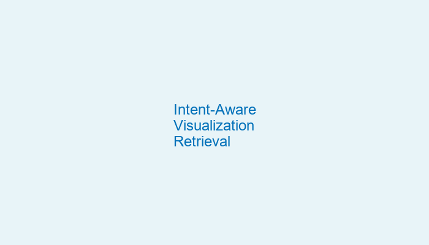
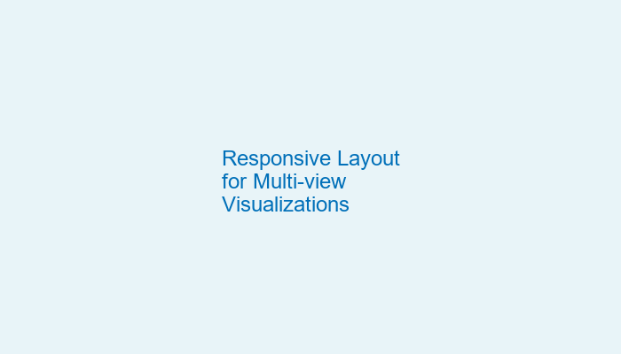
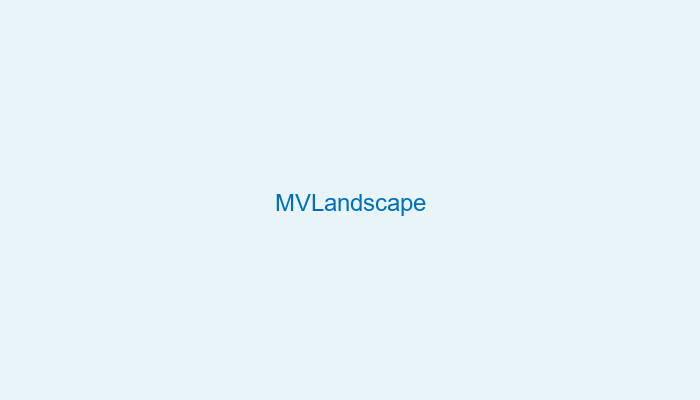

Intent-Aware Visualization Retrieval
In this work, we propose a new framework, namely WYTIWYR (What-You-Think-Is-What-You-Retrieve), that integrates user intents into the chart retrieval process. The framework consists of two stages: first, the Annotation stage disentangles the visual attributes within the query chart; and second, the Retrieval stage embeds the user's intent with customized text prompt as well as bitmap query chart, to recall targeted retrieval result.

Responsive Layout for Multi-view Visualizations
In this paper, we present a two-stage adaptation framework that supports the automated retargeting and semi-automated tailoring of a desktop MV visualization for rendering on devices with displays of varying sizes.
VISAtlas
This paper presents VISAtlas, an image-based approach empowered by neural image embedding, to facilitate exploration and query for visualization collections.

MVLandscape
In this paper, we present an in-depth study of how MVs are designed in practice. We focus on two fundamental measures of multiple-view patterns: composition, which quantifies what view types and how many are there; and configuration, which characterizes spatial arrangement of view layouts in the display space.
Deep Colormap Extraction from Visualizations
This work presents a new approach based on deep learning to automatically extract colormaps from visualizations. After summarizing colors in an input visualization image as a Lab color histogram, we pass the histogram to a pre-trained deep neural network, which learns to predict the colormap that produces the visualization.
VIStory
We present VIStory, an interactive storyboard for exploring visual information in scientific publications. We harvest the data using an automatic figure extraction method, resulting in a large corpora of figures. Each figure contains various attributes such as dominant color and width/height ratio, together with faceted metadata of the publication including venues, authors, and keywords.
FloorLevel-Net
The ability to recognize the position and order of the floor-level lines that divide adjacent building floors can benefit many applications, for example, urban augmented reality (AR). This work tackles the problem of locating floor-level lines in street-view images, using a supervised deep learning approach.
LassoNet
In this work, we introduce LassoNet, a new deep neural network for lasso selection of 3D point clouds, attempting to learn a latent mapping from viewpoint and lasso to point cloud regions. Evaluations confirm that our approach improves the selection effectiveness and efficiency across different combinations of 3D point clouds, viewpoints, and lasso selections.
TimeTuner
TimeTuner is a general visual analytics framework which is designed to help analysts understand how model behaviors are associated with localized correlations, stationarity, and granularity of time-series representations. In our work, we instantiate TimeTuner with two transformation methods of smoothing and sampling, and demonstrate its applicability on real-world time-series forecasting of univariate sunspots and multivariate air pollutants.